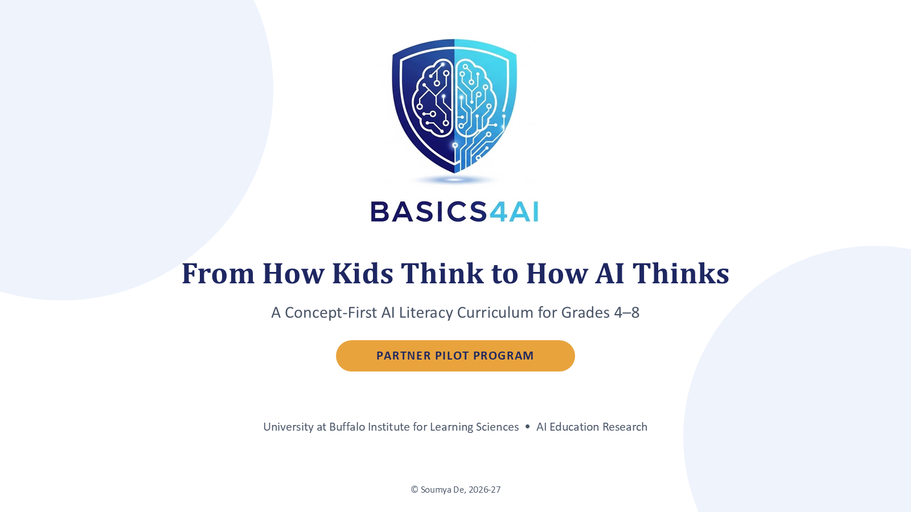

A 10-slide walkthrough of what a partner pilot involves — the research gap Basics4AI fills, how it's designed, what a 10-day engagement looks like, and what we ask of a host organization. Step through it at your own pace below.

Use ← / → to navigate, or click a dot to jump to that slide.
Schedule a conversation, pick your 10-day window, and Basics4AI brings the curriculum, instruction, and data collection. Reach out to set up a time.
Soumya De · University at Buffalo Institute for Learning Sciences · skde@buffalo.edu